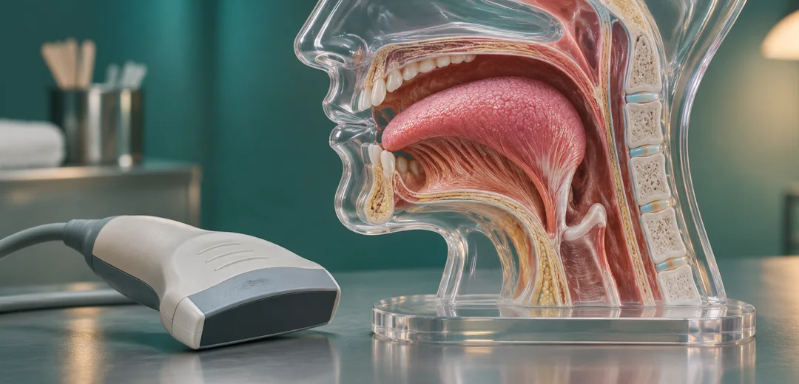
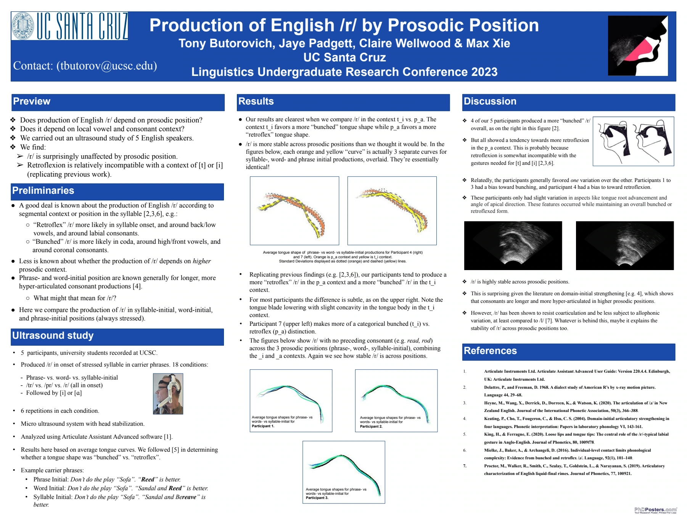

Tracking Tongue Shape in Ultrasound
Computer vision and ultrasound workflows for measuring how the tongue shapes the English /r/ sound.

Measuring a gesture you cannot see
Speakers can produce English /r/ with a bunched tongue or a curled-back tip. Ultrasound reveals the shape during speech, but comparing those shapes requires identifying the tongue contour across frames.


My contribution
I built Python workflows to automate trials and synchronize speech data. My lab work included using DeepLabCut for CNN-based tongue-contour tracking and Articulate Assistant Advanced to work with the ultrasound recordings.
What the poster reports
Our 2023 poster compared average tongue curves from five speakers across phrase-, word- and syllable-initial positions. Tongue shape was relatively stable across those positions, with clear differences between speakers. The poster reports the speech study and its analysis in Articulate Assistant Advanced.